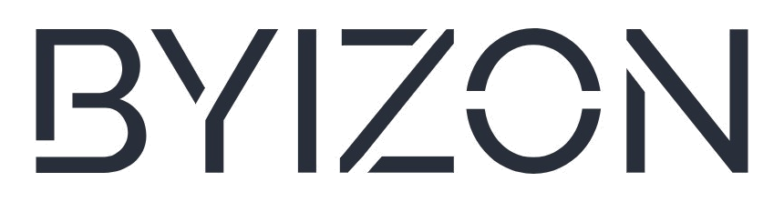

01
"Get my last month's sales data from Slack."
01 - You AskNatural language

Ask BYIZON in plain language. It understands your request, works securely across connected tools, analyzes information, takes approved actions, and builds new digital experiences from your ideas.
Done. I found your sales data, created your monthly performance dashboard and prepared a meeting for tomorrow at 11:00 AM.
View Dashboard → Review Meeting →Slack - CRM - Google Workspace
Notion - Database - APIs
I found relevant sales updates across 47 conversations. I'm organizing the information and generating your report.
BYIZON can transform a sales report into a clean investor-ready page, a mobile view for your team, or an internal dashboard for leaders.
Ask in plain language. BYIZON understands what you need.
Securely connect apps, data, teams, and business systems.
Compare context, identify patterns, and generate insight.
Schedule, approve, route, and complete repetitive tasks.
Create dashboards, reports, and pages from your ideas.
Review, approve, and govern every action.